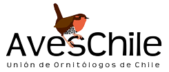

Cóndor Andino | Ave de presa / Carroñera | 14:30 hrs | 25/08/2026 | Cajón del Maipo

Buscamos promover la curiosidad, colaboración y aprendizaje de los entusiastas de la fauna endémica de nuestro país mediante el registro de avistamientos de aves a lo largo de todo el territorio.
Cóndor Andino | Ave de presa / Carroñera | 14:30 hrs | 25/08/2026 | Cajón del Maipo

Loica | Ave paseriforme / Cantora | 09:15 hrs | 24/08/2026 | Parque Bicentenario

Martín Pescador | Ave acuática / Cazadora | 17:45 hrs | 22/08/2026 | Humedal de Batuco
Desarrollador del sitio web de Enactiva, Enlace Chile, Reporte Jurídico y AXON.

Nuestro interés es ofrecer un espacio común y cómodo para toos los entusiastas de las aves a lo largo del país. Buscamos promover el estudio y monitoreo de la fauna para generar conocimiento e interés sobre dichos temas.

Nuestro compromiso es entregar un producto de calidad y en sintonía con las necesidades de los visitantes. Consideramos de suma importancia escuchar la opinión de la comunidad y planear mejoras futuras en torno a ellas.
Nuestro equipo es de carácter multidisciplinario, tenemos: diseñadores, programadores y personas encargadas de revisar las tendencias de la industria para ofrecer un servicio acorde a las necesidades actuales.